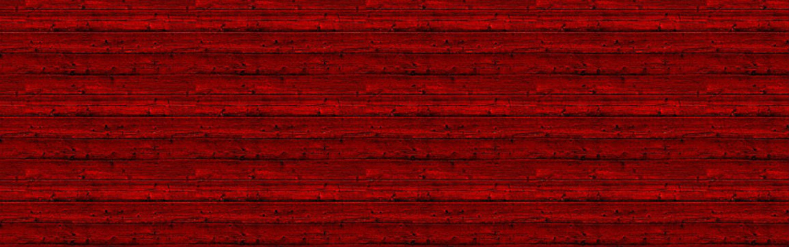
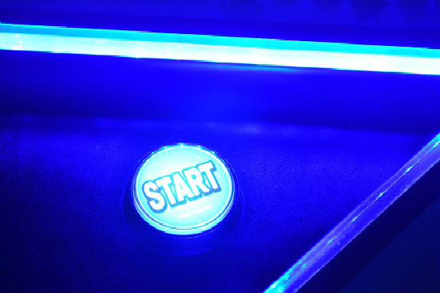

Greg Zimmer
Front-End Web Developer
LinkedIn
Facebook
Google Maps

Featured Work
SunChaser
Link to project

Arcade Game Clone
Link to project
Performance-Maximizer
Link to project
Neighborhood Map
Link to project